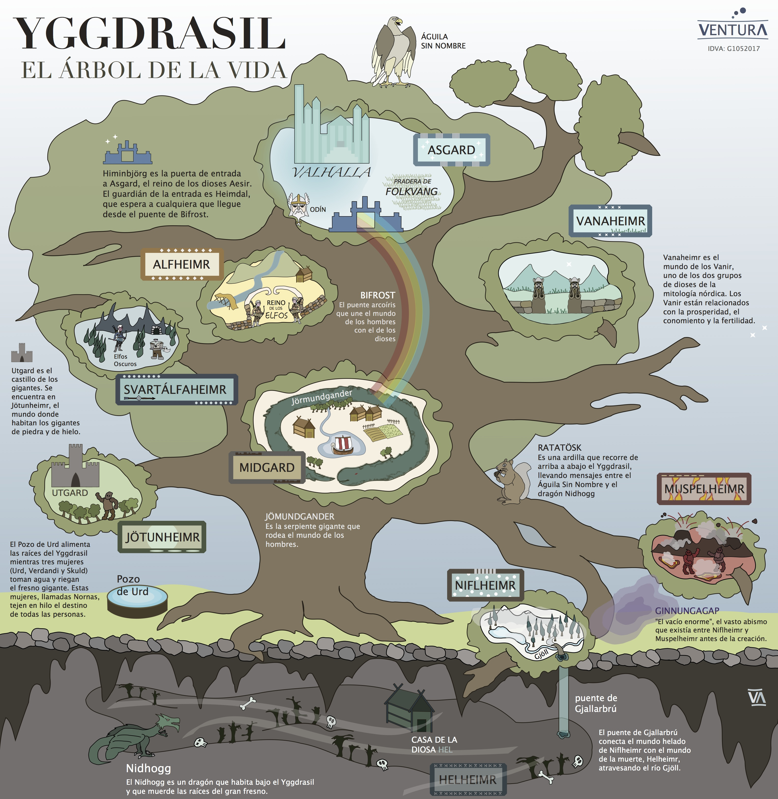
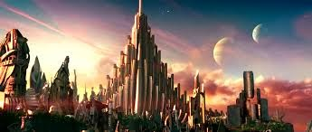
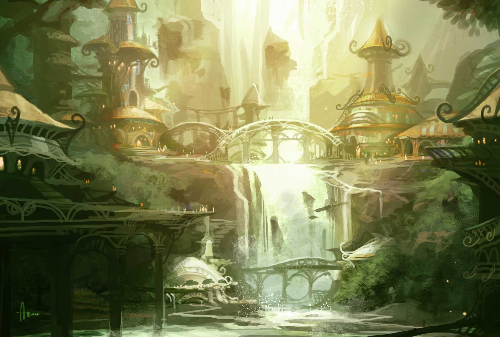
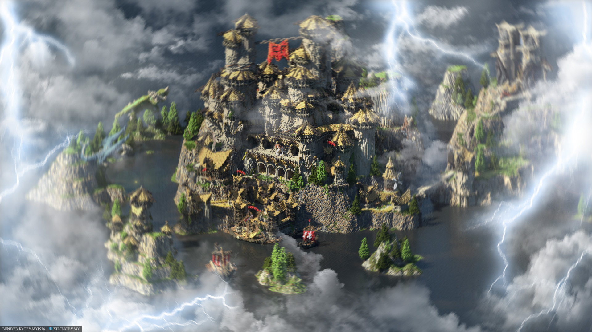
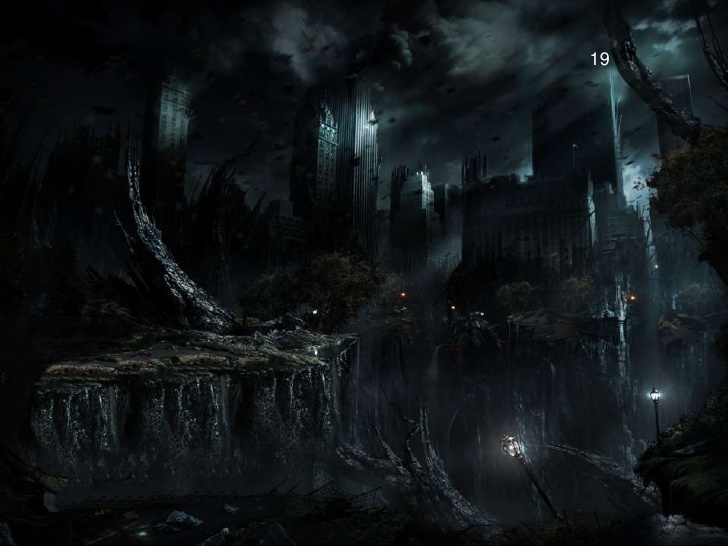
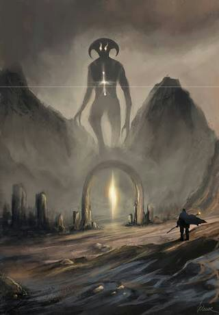
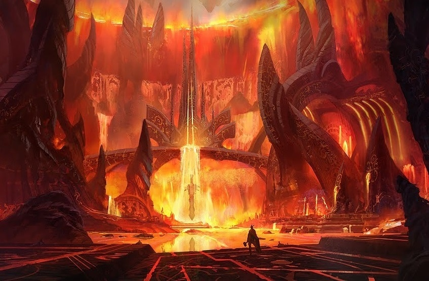
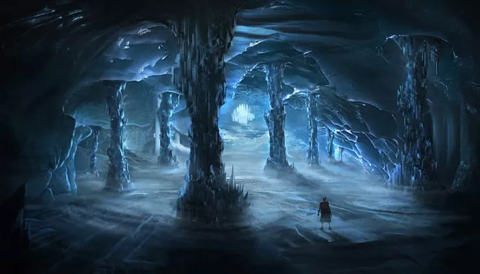
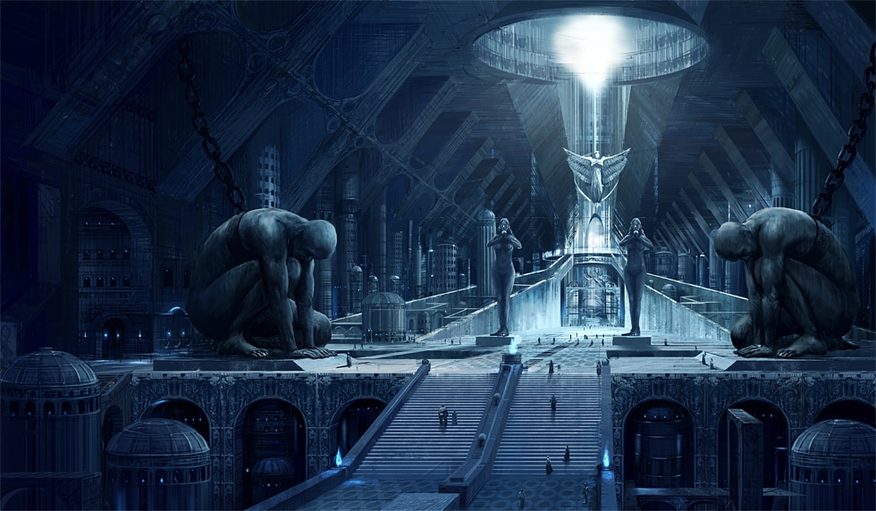

Los Nueve Reinos
Yggdrasil
Yggdrasil es un gigante fresno que da cabida a los nueve mundos que componen el universo, y que están unidos entre sí por las ramas y raíces del árbol.

Para los nórdicos, el mundo de los humanos era nada más una rama del gran Yggdrasil. Nueve mundos posee Yggdrasil.
El árbol se divide en tres partes: Niflheim (raíz), Midgard (tronco) y Asgard (copa). Se puede notar en esto la representación del ciclo de nacimiento, vida y muerte que ya se siente en las nornas.
Las raíces son tres. La primera se dirige hacia la Fuente de Hvergelmir. La segunda a la fuente de Mímir. La última a la Casa de las Nornas, el Destino.
- Asgard, el reino de los dioses (Æsir). 
- Alfheim, el hogar de los elfos de la luz. 
- Vanaheim, el hogar de los vanir. 
- Svartalfaheim, el hogar de los elfos oscuros y de los enanos. 
-
Midgard, el hogar de los humanos.

- Jötunheim, el hogar de los gigantes. 
- Muspelheim, el mundo primordial de fuego. 
- Niflheim, el hogar de las nieblas y el terror. 
- Helheim, el hogar de los muertos. 